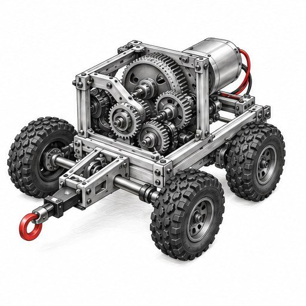
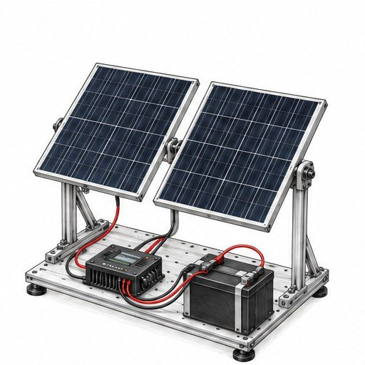
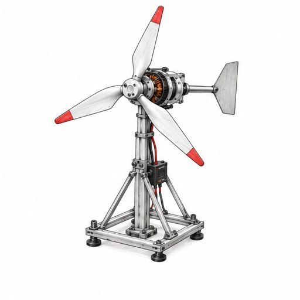
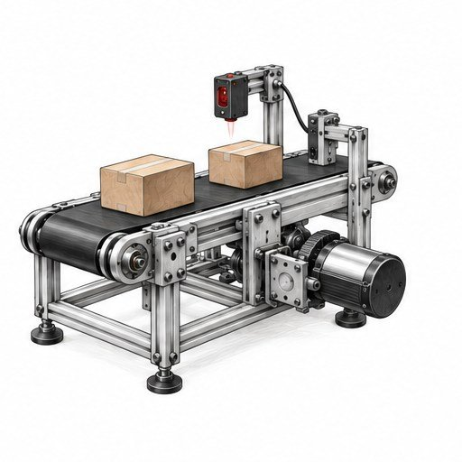

Feed a failed build into the hopper. It prints what went wrong and what I took from it.

[Failed build A]

[Failed build B]

[Failed build C]

[Failed build D]
Printout for
Hardware, abandoned [month year]
[The honest account: what failed, and why.]
[The lesson, and the build it fed into.]
See where the lesson went